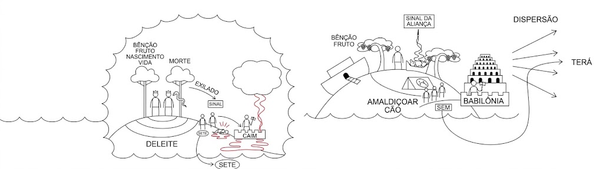
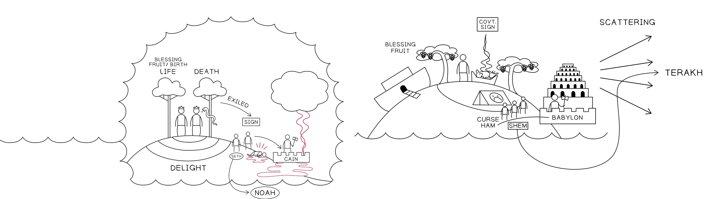

Sessão 3: O Design Literário de Gênesis 1-11Session 3: The Literary Design of Genesis 1-11
Pontos-ChaveKey Takeaways
A história em Gênesis 1-11 nos conduz por um ciclo temático de criação, falhas crescentes, des-criação e, finalmente, a re-criação de um remanescente comissionado como a nova humanidade.The story in Genesis 1-11 walks us through a thematic cycle of creation, escalating failures, de-creation, and finally the re-creation of a remnant that is commissioned as the new humanity.
A história de Avraham é projetada com múltiplos movimentos que repetem e desenvolvem esse ciclo.The story of Avraham is designed with multiple movements that repeat and develop this cycle.
Saber onde você está no ciclo esclarece muitas das características singulares na ordem e no design da história de Avraham.Knowing where you are in the cycle illuminates many of the unique features in the order and design of the Avraham story.
A Melodia Temática do TaNaKThe Thematic Melody of the TaNaK
A organização literária de Gênesis 1:1-11:26, tanto em seu design quanto nos temas principais explorados nas narrativas, forma o modelo organizacional do TaNaK. Para entender verdadeiramente do que trata todo o TaNaK, precisamos recapitular a história até agora, como é apresentada em Gênesis 1-11 (adaptado de D.A. Teeter, comunicação pessoal e seu artigo “Biblical Symmetry and Its Modern Detractors”, apresentado no congresso de 2019 da International Organization for the Study of the Old Testament).The literary organization of Genesis 1:1-11:26, both in its design and the main themes explored in the narratives, forms the organizational template of the TaNaK. So to truly grasp what the entire TaNaK is about, we need to recap the story so far as it’s presented in Genesis 1-11 (adapted from D.A. Teeter, personal communication and his “Biblical Symmetry and Its Modern Detractors“ paper delivered at the 2019 International Organization for the Study of the Old Testament congress).
Genesis 1:1-2:3Genesis 1:1-2:3
Criação a partir das águasCreation Out of Waters
1:1-2
1:3-13
Dia 1Day 1
Dia 2Day 2
Dia 3Day 3
1:14-31
Dia 4Day 4
Dia 5Day 5
Dia 6Day 6
2:1-3
Genesis 2:4-5:32Genesis 2:4-5:32
2:4-3:24
Insensatez e consequências: 1ª geraçãoFolly & Fallout 1st Generation
2:4-17
2:18-3:13
3:14-24
4:1-26
Insensatez e consequências: 2ª geraçãoFolly & Fallout 2nd Generation
4:1-16
4:17-26
5:1-32
Linhagem dividida: 3 filhosDivided Lineage: 3 Sons
5:1-2
5:3-27
5:28-32
Genesis 6:2-9:17Genesis 6:2-9:17
Des-criação pelas águasDe-Creation by Water
6:1-7:17a
7:17b-8:5
8:6-9:17
Gênesis 1:1-9:17. Tradução e Design Literário por Tim Mackie para BibleProject Classroom: Abraão (2021).Genesis 1:1-9:17. Translation and Literary Design by Tim Mackie for BibleProject Classroom: Abraham (2021).
Genesis 6:1-9:17Genesis 6:1-9:17
Nova criação a partir da águaNew Creation Out of Water
6:1-7:17a
7:17b-8:5
8:6-9:17
Genesis 9:18-10:32Genesis 9:18-10:32
9:18-29
Insensatez e consequências: 1ª e 2ª geraçõesFolly & Fallout: 1st & 2nd Generation
9:18-19
9:20-27
9:28-29
10:1-32
Linhagem dividida: 3 filhosDivided Lineage: 3 Sons
10:1
10:2-5JaféJapheth
10:6-20CamHam
10:21-31SemShem
10:32
Genesis 11:1-9Genesis 11:1-9
Des-criação pela dispersãoDe-Creation by Scattering
11:1-2
11:3-7
11:3-4
11:5
11:6-7
11:8-9
Gênesis 6:1-11:9. Tradução e Design Literário por Tim Mackie para BibleProject Classroom: Abraão (2021).Genesis 6:1-11:9. Translation and Literary Design by Tim Mackie for BibleProject Classroom: Abraham (2021).
Genesis 11:1-9Genesis 11:1-9
Nova criação pela dispersãoNew Creation by Scattering
Des-criação pela morte, nova criação pela bênçãoDe-Creation by Death, New Creation by Blessing
11:27-32
11:27-28
11:29-30
11:31-32
12:1-5
12:1-3
12:4
12:5
Gênesis 11:1-12:5. Tradução e Design Literário por Tim Mackie para BibleProject Classroom: Abraão (2021).Genesis 11:1-12:5. Translation and Literary Design by Tim Mackie for BibleProject Classroom: Abraham (2021).
Esses ciclos temáticos estabelecem um padrão narrativo e uma melodia temática que recicla, desenvolve e avança a cada nova geração. A melodia básica é assim:These thematic cycles set up a narrative pattern and thematic melody that recycles, develops, and advances with each new generation. The basic melody goes like this.
1. Criação e Bênção1. Creation and Blessing
Deus traz ordem/vida/bênção a partir do caos/águas/morte/maldição.God brings order/life/blessing out of chaos/waters/death/curse.
Palavras-chave: vida, bênção, criar, estabelecer, semente, brotar, crescer, fruto, frutífero e multiplicar. Também sete, plenitude e juramento (todos grafados שבע).Key words: life, blessing, create, establish, seed, sprout, grow, fruit, fruitful and multiply. Also seven, fullness, and oath (all spelled שבע).
2. Insensatez, Teste e Falha (a.k.a. “a queda insensata”)2. Folly, Test, and Failure (a.k.a. “the foolish fall”)
Deus convida um parceiro humano escolhido para compartilhar da ordem/vida/bênção, o que coloca uma decisão/teste de sua confiabilidade sobre a mesa.God invites a chosen human partner to share in the order/life/blessing, which places a decision/test of their trustworthiness on the table.
O parceiro escolhido por Deus falha/tem sucesso no teste, geralmente envolvendo engano/divisão/violência.God’s chosen partner fails/succeeds the test, usually involving deception/division/violence.
A mesma pessoa/próxima geração enfrenta sua própria oportunidade e teste e falha/tem sucesso, geralmente envolvendo uma expressão intensificada de engano/divisão/violência.The same person/next generation faces their own opportunity and test and fails/succeeds, usually involving an intensified expression of deception/division/violence.
A sequência crescente de testes e falhas leva a uma separação entre os personagens principais, de modo que uma pessoa ou família se separa do resto e é escolhida por Deus para um novo futuro.The escalating sequence of tests and failures leads to a separation between the key characters so that one person or family splits off from the rest and is chosen by God for a new future.
3. Des-criação e Re-criação3. De-creation and Re-creation
Des-criação: Deus provoca uma inversão do nº 1 acima, geralmente uma escalada de caos/morte/maldição.De-creation: God brings about an inversion of #1 above, usually an escalation of chaos/death/curse.
A partir dessa des-criação, Deus escolhe/preserva um remanescente/semente e inicia um novo movimento de re-criação através deles (frequentemente marcado por alianças e trocadilhos com a raiz hebraica שבע, “sete/plenitude/juramento”, ou ברית, “aliança”).Out of that de-creation, God chooses/preserves a remnant/seed and begins a new movement of re-creation through them (often marked by covenants and wordplays on the Hebrew root שבע, “seven/fullness/oath,” or ברית, “covenant”).
4. Repetir4. Press Repeat
CriaçãoCreation
A partir das trevas e da desordemOut of darkness & disorder
Ordem / vida / bênção / descanso / semente / frutoOrder / life / blessing / rest / seed / fruit
Padrões de 3+1 / 7 / 10Patterns of 3+1 / 7 / 10
O Teste (também conhecido como "A Queda Insensata")The Test (a.k.a. “The Foolish Fall”)
Passar/FalharPass/Fail
EnganoDeception
Fazer o que é "bom" aos seus próprios olhosDoing “good” in one's eyes
DivisãoDivision
Passar/FalharPass/Fail
EnganoDeception
Fazer o que é "bom" aos seus próprios olhosDoing “good” in one's eyes
DivisãoDivision
Passar/FalharPass/Fail
EnganoDeception
Fazer o que é "bom" aos seus próprios olhosDoing “good” in one's eyes
DivisãoDivision
Des-criação e Re-criaçãoDe-Creation & Re-Creation
Desordem / morte / maldiçãoDisorder / death / curse
Resgate do remanescenteRescue of remnant
Padrões de 3+1 / 7 / 10Patterns of 3+1 / 7 / 10
Nova ordem / vida / bênção através da aliançaNew order / life / blessing through covenant
Gênesis 1:1-11:26. Tradução e Design Literário por Tim Mackie para BibleProject Classroom: Abraão (2021).Genesis 1:1-11:26. Translation and Literary Design by Tim Mackie for BibleProject Classroom: Abraham (2021).
As histórias de Avraham são organizadas de acordo com essa mesma melodia temática, à medida que o ciclo se repete nos níveis macro, médio e micro de cada parte da história.The Avraham stories are organized according to this same thematic melody as the cycle replays itself on the macro-level, medium-level, and micro-level of each part of the story.
A Melodia Temática de Gênesis 1-11 VisualizadaGenesis 1-11 Thematic Melody Visualized


Melodia Temática de Gênesis 1-11. Ilustração criada por Tim Mackie para BibleProject Classroom: Abraão (2021).Genesis 1-11 Thematic Melody. Illustration created by Tim Mackie for BibleProject Classroom: Abraham (2021).
Pergunta de ReflexãoReflection Question
Como os autores bíblicos conectam a história de Avraham ao ciclo de temas em Gênesis 1-11?How do the biblical authors link the Avraham story to the cycle of themes in Genesis 1-11?